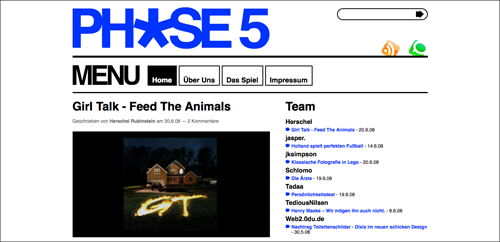

Neues Design auf "Phase 5"

Es ist mal wieder soweit. Das Quartal ist um - Phase 5 braucht ein neues Design. Bei der Gelegenheit habe ich mich gleich mal vom Splatter-Dingens verabschiedet, auf Helvetica umgestellt und die ganze Struktur etwas magaziniger gemacht. Nun sieht man, wann welche/r Autor/in seinen/ihren letzten Beitrag verfasst hat.
Wie immer an dieser Stelle die Bitte zu schauen, ob sich irgendwo der Fehlerteufel eingeschlichen hat. Ansonsten weiterhin viel Spaß mit Phase 5 - dem kollaborativen Blog aus Boogie-down Hannover. Ihr Kunden!
9 Kommentare zu "Neues Design auf "Phase 5""
- Externe Links im selben Fenster öffnen
- Externe Links in neuem Fenster öffnen
elcario
Gefällt mir ganz gut, schön übersichtlich und schlank!
Aber, wie zum Henker hast du es geschafft, dass die Avatare nun nicht nur in der Backendansicht gezeigt werden? Hängt bestimmt am Theme, oder?
Herschel Rubinstein
meinst du die gravatare hier bei den kommentaren? das geht ganz einfach:
http://bueltge.de/wordpress-25-gravatare-einfach-nutzen/
jksimpson
jau, nicht schlecht. das war sicher ein ganzer humpen arbeit. auch schön, dass wir jetzt serifenlose schrift haben. und auch ansonsten hast du ein paar nette kleinigkeiten eingebaut.
Rick
Also ich finde es ist sehr übersichtlich geworden, bei längeren Texten ermutigt es die Leser z.B. unter Firefox endlich die Tastenkombination zu lernen, was man sowieso können sollte. Und wegen der Schriftgröße hat man nun schon bei kürzeren Kommentaren bereits das Gefühl ausreichend geleistet zu haben.
Rick
Aha, > bzw < werden auch verläßlich rausgefiltert. Die Tastenkombination ist natürlich Strg + Minuszeichen.
Anm.: mal schauen wieviele DAUs intuitiv erkennen dass sich unter den Pfeilen unten die Senden-Schaltfläche verbirgt
thomas
Hm.....müsst ihr jetzt alle dieses "Zeitungs-Design" benutzen?
Ich mag es nicht soooo gerne; aber entscheidend ist ja der Inhalt. Und der ist hier, wie immmer, richtig gut! Top!
Klaus
Soso. Schlicht und modern =) Muss ich mich erstmal dran gewöhnen....aber jetzt trau ich mich gar nicht, was zu bloggen, damit dann eine schöne Ankündigung noch ein bisschen oben bleibt...
Herschel Rubinstein
@jksimpson: ja, nachdem nils mich vollgeheult hat hab ich auf serifenlos umgestellt
@rick: ist auf jeden fall noch zuviel lust (verschenkter platz) in dem ganzen design. das wird in spätestens drei monaten optimiert was die pfeile anbelangt, mache ich mir keine sorgen. die visualisierung der funktion des buttons ist perfekt!
was die pfeile anbelangt, mache ich mir keine sorgen. die visualisierung der funktion des buttons ist perfekt! 
@thomas: vielen dank. um ehrlich zu sein, gab es zwei gründe für das magazin'eske design:
1. ich wollte die möglichkeiten von wordpress ausloten
2. ich wollte mal richtig einen auf dicke hose machen.
ich mache mir momentan aber schon wieder gedanken über ein neues design
@Klaus: egal, einfach loslegen. den feed-lesern ist es sowieso schnurz.
Lex Dildo a.k.a. Skeleton Meteor
Sieht gut aus! Hat aber noch ein paar Schwächen. Die sicher in der Beta-Version ausgemerzt werden ^__^
Zum einen stört es Lex's Lesefluss, wenn er immer nur einen Artikel angucken darf. Und jeden weiteren klicken muss. Statt einfach nur zu scrollen.
Außerdem hat er noch nicht rausbekommen, wie man zwischen den Artikeln wechselt.